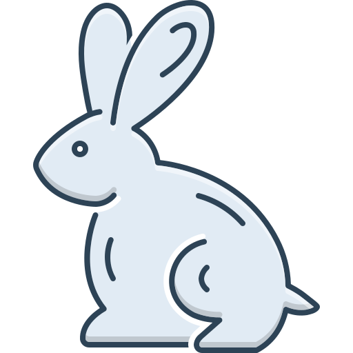

Guia de Configuração do Ambiente Sphinx¶
Bem-vindo ao guia oficial de configuração do nosso ambiente de documentação. Todo o processo documentado abaixo foi realizado utilizando estritamente Python, Sphinx e o tema Furo, adotando a filosofia de “Docs as Code” (Documentação como Código).
🐍 Passo 1: Preparação do Python e PIP
Antes de instalar o Sphinx, precisávamos garantir que a versão correta do Python (3.13) estivesse ativa e reconhecida no terminal do Windows.
Remoção de versões conflitantes: Desinstalamos o Python 3.9 usando o painel de aplicativos do Windows, já que o terminal rodando como Administrador bloqueava o
winget.Correção de Atalhos (Aviso da Loja): Desativamos os “Aliases de execução do aplicativo” nas configurações do Windows para evitar que o comando
pythonabrisse a Microsoft Store por engano.Teste do ambiente: Confirmamos que a instalação do Python 3.13 estava correta usando:
python --version
📦 Passo 2: Instalação do Sphinx e Tema Furo
Com o gerenciador de pacotes pip funcionando corretamente no terminal do VS Code, baixamos as ferramentas necessárias para compilar nosso texto em um site HTML.
Executamos os seguintes comandos:
python -m pip install -U sphinx
pip install furo
pip install sphinx-design
Nota
O pacote sphinx-design é exatamente o que nos permite usar este menu retrátil (dropdown) de forma nativa e sem precisar programar em HTML/CSS.
🏗️ Passo 3: Estruturação do Projeto (Quickstart)
Não precisamos criar as pastas na mão ou baixar do GitHub. Utilizamos a própria ferramenta do Sphinx para gerar o esqueleto do projeto.
Rodamos no terminal:
sphinx-quickstart
Durante o processo, escolhemos separar as pastas de origem (source) e compilação (build), definimos o nome do projeto e ajustamos o idioma para Português do Brasil (pt_BR).
⚙️ Passo 4: Configurando o conf.py
O arquivo mágico do Sphinx é o source/conf.py. Nele, não escrevemos código web, apenas mudamos duas variáveis em Python para ativar nosso tema e nossas funções visuais:
# Adicionamos a extensão para os dropdowns funcionarem
extensions = [
'sphinx_design',
]
# Trocamos o tema padrão HTML para o Furo
html_theme = "furo"
🚀 Passo 5: Escrita e Compilação (O Fluxo de Trabalho)
Nosso dia a dia agora acontece inteiramente dentro do VS Code.
Escrevemos os arquivos usando a sintaxe simples do
.rst.Adicionamos a nova página no sumário dentro de
source/index.rst.Compilamos o site inteiro digitando o comando abaixo no terminal:
.\make html
Dica
Para visualizar o resultado instantaneamente, basta abrir o arquivo build/html/index.html direto pelo Explorador do Windows, ou usar a extensão Live Preview dentro do próprio VS Code.
{kind=link}
